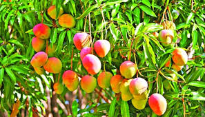

|  | Mango grows well on wide variety of soils, such as lateritic, alluvial, sandy loam and sandy.The loamy, alluvial, well-drained, aerated and deep soils (2-2.5 m) rich in organic matter ideal for mango cultivation. The water table should be around 3 m and soils with high water table are unsuitable for mango. |